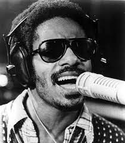

Amy Winehouse, née le 14 septembre 1983 à Londres et morte le 23 juillet 2011 dans cette même ville, est une chanteuse, auteur-compositrice-interprète et guitariste britannique, connue pour sa voix caractéristique rappelant celles de Dinah Washington, Sarah Vaughan ou encore Wanda Jackson. D'une manière générale, sa musique est un mélange de styles comme le jazz, le blues ou encore la soul.
Amy Jade Winehouse naît à Southgate, un quartier de Enfield à Londres, dans une famille juive qui partage son amour du jazz. Son père chante souvent du Frank Sinatra à la maison et la jeune Amy prend l'habitude de chanter au point que ses enseignants se plaignent de ses difficultés à se concentrer en classe. Elle est également influencée par sa grand-mère paternelle Cynthia qui fut chanteuse de cabaret, et qui suggère à Amy de suivre les cours de la Susi Earnshaw Theatre School où elle se rend le samedi pour approfondir sa formation vocale et apprendre à faire des claquettes.
Ses parents se séparant en 1992, Amy et son frère vivent alors avec leur mère Janis dans un autre logement. Elle devient une enfant rebelle, blessée par ce divorce. Elle étudie pendant quatre ans à l'Earnshaw school, avant de demander une formation à temps plein au Sylvia Young Theatre School. Il semble qu'elle en ait été expulsée à l'âge de quatorze ans, en raison de sa tenue peu soignée, de son piercing nasal, mais aussi de son manque d'application en classe.
Le 18 mai 2007, Amy Winehouse épouse Blake Fielder-Civil à Miami en Floride. Mais après une énième péripétie du couple, son mari Blake demande le divorce en janvier 2009, ce qui est officialisé en juillet 2009.
Depuis son adolescence, l'artiste souffre de boulimie et ne réussira jamais à se sortir de ce trouble de l'alimentation. Amy Winehouse et ses relations avec les produits stupéfiants ont également fait l'objet d'une grande attention des médias. Dans diverses interviews, elle admet avoir des problèmes avec la drogue, ainsi que des problèmes de dépression et de trouble alimentaire. Lors de l'émission britannique The Album Chart Show, Amy Winehouse déclare qu'elle n'est pas alcoolique mais souffre de trouble bipolaire. Néanmoins, fin janvier 2008, Amy Winehouse entre dans un établissement de désintoxication pour une période de deux semaines de traitement. Le 26 mars 2008, le porte-parole d'Amy Winehouse annonce qu'elle se porte « fort bien » et dément les propos d'un article publié dans un tabloïd britannique annonçant le retour en cure de désintoxication de la chanteuse. Pourtant à la fin du mois d'avril 2008, le comportement de la chanteuse et une accusation de voies de fait provoquent des doutes sur le succès de ses efforts en cure de désintoxication et poussent le père de la chanteuse et son manager à demander sa mise sous tutelle. À partir de 2009, la chanteuse, en cure de repos durant six mois sur l'île de Sainte-Lucie, semble avoir arrêté toute consommation de drogue dure, bien que sa consommation d'alcool reste forte.
Le 23 juillet 2011 à 15 h 54, la chanteuse est retrouvée morte dans son appartement dans le quartier Camden Town à Londres. L'autopsie pratiquée pour connaître les causes de sa mort révèle une surdose d'alcool. La chanteuse, qui luttait contre sa toxicodépendance et ses troubles alimentaires, sortait alors d'une période de sevrage d'alcool de trois semaines. La reprise d'une consommation importante lui a donc été fatale.
Après avoir joué sur la guitare de son frère Alex, Winehouse en achète une à 14 ans et commence à écrire de la musique un an plus tard. Elle trouve peu de temps après un emploi de chroniqueuse « showbiz » pour le World Entertainment News Network et de chanteuse dans un orchestre de jazz. En juillet 2000, elle est la chanteuse vedette du National Youth Jazz Orchestra.
Le premier album d'Amy Winehouse, Frank, sort le 20 octobre 2003. Produit essentiellement par Salaam Remi, il comporte de nombreuses chansons d'influences jazz et toutes les chansons originales sont coécrites par Amy Winehouse. Elle reçoit des critiques positives sur le regard acerbe et posé qu'elle porte sur les relations amoureuses, le monde, la musique et elle-même. En 2004, son album est sélectionné pour concourir aux Brit Awards dans les catégories de « British Female Solo Artist » et « British Urban Act ». Il est certifié disque d'or en Angleterre en février 2004. Amy Winehouse remporte le « Ivor Novello songwriting price » pour la meilleure chanson contemporaine, aux côtés de Salaam Remi, avec sa contribution sur le premier single, Stronger Than Me.
Contrairement à son premier album aux influences jazz rétro, la production du second album s'oriente plus sur le style des girl groups des années 1950 et 1960. Back to Black sort au Royaume-Uni le 30 octobre 2006. À plusieurs reprises lors de son exploitation, il se place à la première position des charts anglais. Pour sa sortie aux États-Unis, le 17 mars 2007, il se classe au septième rang du Billboard 200. Le 14 décembre 2007, l'album est six fois certifié disque de platine au Royaume-Uni et finit l'année comme l'album le plus vendu. Depuis la fin de l'année 2007, Amy Winehouse reçoit de nombreux prix et distinctions. La chanteuse remporte les Grammy Awards 2008 dans les catégories « Enregistrement de l'année », « Chanson de l'année » et « Meilleure Prestation vocale pop féminine » pour le single Rehab, et son album Back to Black reçoit une proposition pour « Album de l'année » et remporte le Grammy de l'« Enregistrement de l'année ». La chanteuse obtient un Grammy dans la catégorie « Meilleure Nouvelle Artiste ». Une sculpture de cire la représentant est exposée à Londres dans la galerie Madame Tussauds dans le cadre d'une nouvelle zone du musée consacré à la musique. Le musée note qu'Amy Winehouse est « une véritable icône dans la musique moderne ».
En plus de son propre album, Amy Winehouse collabore avec d'autres artistes en single. Elle chante sur la chanson Valerie de l'album solo de Ronson. Cette chanson se classe numéro deux au Royaume-Uni au moment de sa sortie le 1er octobre. La chanson reçoit une proposition pour les Brit Awards 2008, dans la catégorie « Best British Single ».
Malheureusement, Amy Winehouse n'a eu le temps de réaliser que deux excellents albums :
| Nom | Images | Auteur |
|---|---|---|
| Stevie Wonder |  | Nour AIT KADDOUR |